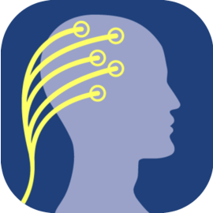
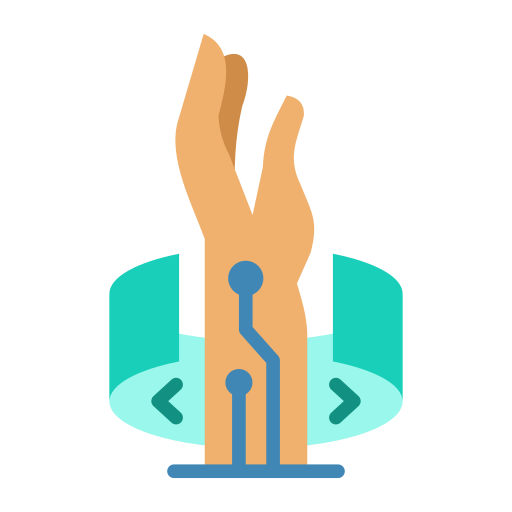
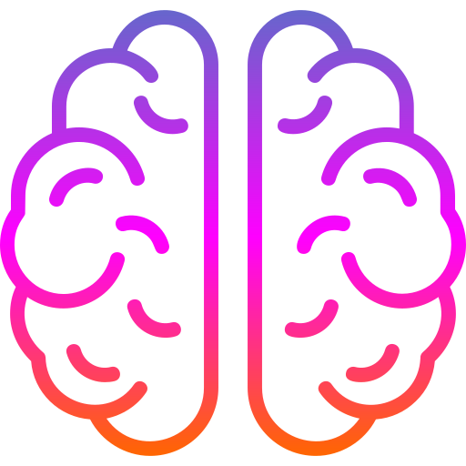
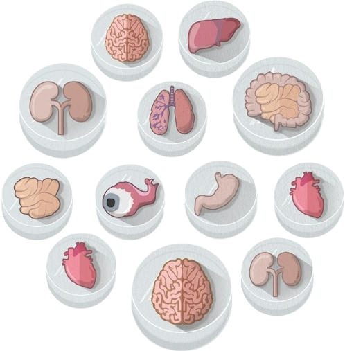

Welcome to My Academic Site
MedInnovate | EvolveHealth | InspireBio
About Me
I am Renjie(Rayn Jay) Mei, a potential enthusiastic researcher and developer specializing in Brain Computer Interface and Flexible Electrode. With a strong academic background and hands-on experience in cutting-edge technologies, I strive to bridge the gap between theory and practice.
Currently, I am pursuing my Undergraduate degree in Intelligent Medical Engineering at The Southern University of Science and Technology, China. My study focuses on metal-polymer electrodes for biomedical applications and signal processing techniques to enhance medical device performance. I am particularly interested in developing innovative solutions for wearable health technologies and neural interfaces.
Outside of academia, I enjoy photography, ping-pong, snooker (mostly watching the games), and exploring the intersection of technology and art. I believe that creativity and curiosity are the driving forces behind meaningful innovation.
Research Interests
-  Brain Computer Interface
-  Wearable Devices
-  Neuroscience, especially Vision
-  Organoid, especially Brain
BME YES! BUT WHY?
With human lifespan steadily increasing, the challenges associated with neurodegenerative diseases and chronic conditions are becoming more pressing. It is no longer sufficient for humans to live longer—we must also ensure a high quality of life, maintaining both physical and cognitive well-being. This calls for advanced biomedical technologies that integrate seamlessly with the human body, enabling early diagnosis, real-time monitoring, and effective intervention.
My research focuses on the intersection of Brain-Computer Interfaces (BCI) and flexible electrodes, aiming to develop next-generation neurotechnology solutions that enhance human health and performance. Currently, as an undergraduate student in Intelligent Medical Engineering at the Southern University of Science and Technology, I am exploring metal-polymer electrodes for biomedical applications and signal processing techniques to improve medical device functionality. My goal is to bridge the gap between engineering and medicine, contributing to the development of wearable health technologies and neural interfaces that offer both comfort and precision.
By leveraging interdisciplinary innovations in materials science, bioelectronics, and artificial intelligence, I aspire to create practical solutions that empower individuals to lead healthier, more fulfilling lives in an era of extended longevity.
Soft Skills
Education Background

Bachelor of Biomedical Engineering, specifically Intelligent Medical Engineering
Southern University of Science and Technology, China | 2022 - 2026
In Progress